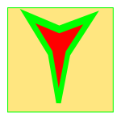
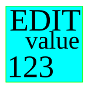
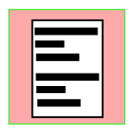
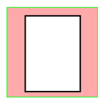
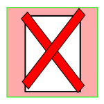
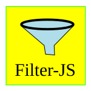
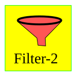
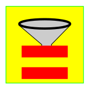
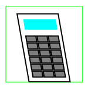

Layout
 Previous
Previous
Selects the previous collection by referring to the History.
 Next
Next
Selects the next Collection using the History.
Save As.
Save the data from the selected Collection to a file with a new name.
Reset
Resets the program to its initial state, avoiding the user having to reload the web page.
 Snap shot.
Snap shot.
Takes a snapshot of the current user view, making it available for saving in a new window.
Move Up.
Move up.

Move Dn.Move down.
Data set/reset.
Opens the menu that allows you to set or reset the cell values of the selected field (column), typing a predefined value or the value resulting from the evaluation of a formula expressed in the formalism of the JavaScript language.

Change value.Opens a dialog box displaying the value of the selected cell, supplemented by any additional information, offering the option to edit the value if necessary. The information provided and the options for modifying the value depend on the selected data type.

Edit Record.The Edit Tuple feature allows you to explore the selected Data Collection by representing the records (i.e., tuples) as cards rather than as rows in a table. The card representation facilitates the study of records with a large number of fields, allowing for a more compact representation.

New Record.Opens a dialog box displaying a blank record to allow a new record to be added to the Collection.
New n Records.
This function opens a window prompting the user to specify how many new records he/she want to add to the collection. If the number entered is greater than zero, it adds that many blank records to the bottom of the table.

Delete Record.Delete the selected record from the Collection.
Calendar
Show the calendar.

Filter JS.The "Filter JS" tool allows you to set filter conditions using the full expressive power of JavaScript. Clicking on the icon opens a dialog box where the user can enter a filter condition written in JavaScript. After confirmation, the program will update the list of the displayed records, showing only the tuples that meet the condition set.

Wizard.Create a filter condition using a wizard. Clicking on "Filter-2" opens a dialog box that facilitates the creation of complex filter conditions that require the use of logical connectors (AND, OR, etc.). After confirmation, the program will update the list of displayed records, showing only the tuples that satisfy the condition set.
Filter Query by Example.
Query by Example filter.Opens a dialog box showing the organization of the fields of the records in the considered collection. The user can fill in one or more fields by entering the strings corresponding to the prefixes to be searched for. After confirmation, the program will update The list of records displayed showimg only the tuples that meet the specified condition.
Filter String.
The "String Filter" allows you to set a search condition based on the text contained in the boxes of the considered field. Clicking on the icon opens a dialog box where the user can enter the character string he/she wish to search for. After confirmation, the program will update the list of displayed records, showing only the tuples that meet the condition set.

Filter Equal.The "Equal Filter" selects all records with the same value as the selected cell. Clicking on a cell in a table selects both a value (the cell's value) and a field (the one corresponding to the column to which the selected cell belongs). Clicking "Equal Filter" selects all rows in the selected column with the same value as the cell selected.
Toggle Filter.
Toggles the selection back to displaying the entire collection, i.e., all the records it contains.
Invert Filter.
Toggles the filter to show records that do not match the specified conditions.
Clear selection.
Clear the selection. Clears the previously set filter condition.
Go to line
Moves the cursor to select the user-specified record (among those meeting the filter conditions).
Layout
Shows the record layout of the selected Collection allowing you to change it.
Field Layout
Shows the record layout properties of the selected column.
Config. UsrView
Opens the panel that allows you to edit the parameters associated with the Collection selected.
Collection URL
Opens a window that shows the URL corresponding to the selected collection. NOTE: This information may sometimes not be available.
Edit Collection
Allows the user to view the collection by opening the corresponding file with a text editor.
JS-Int
Opens a terminal window to allow the user to manipulate collection data using the JavaScript interpreter.

CalculatorShow the calculator.
VLS
Open the application "Vediamo/Let's See". Camera.
WE4
Open the "Web Editor 4" application.
Insert remark
Insert an annotation (remark).
Remarks
Show the annotations table (Remarks).
Configure.
Opens the configuration window.
 Help.
Help.
Opens the context-sensitive Help screen, displaying information about the functions available in the given context.
About.
Shows general information about the author and license terms.
Test-1
Test code.
 NL command
NL command
Null function.
Submit command
Run Command